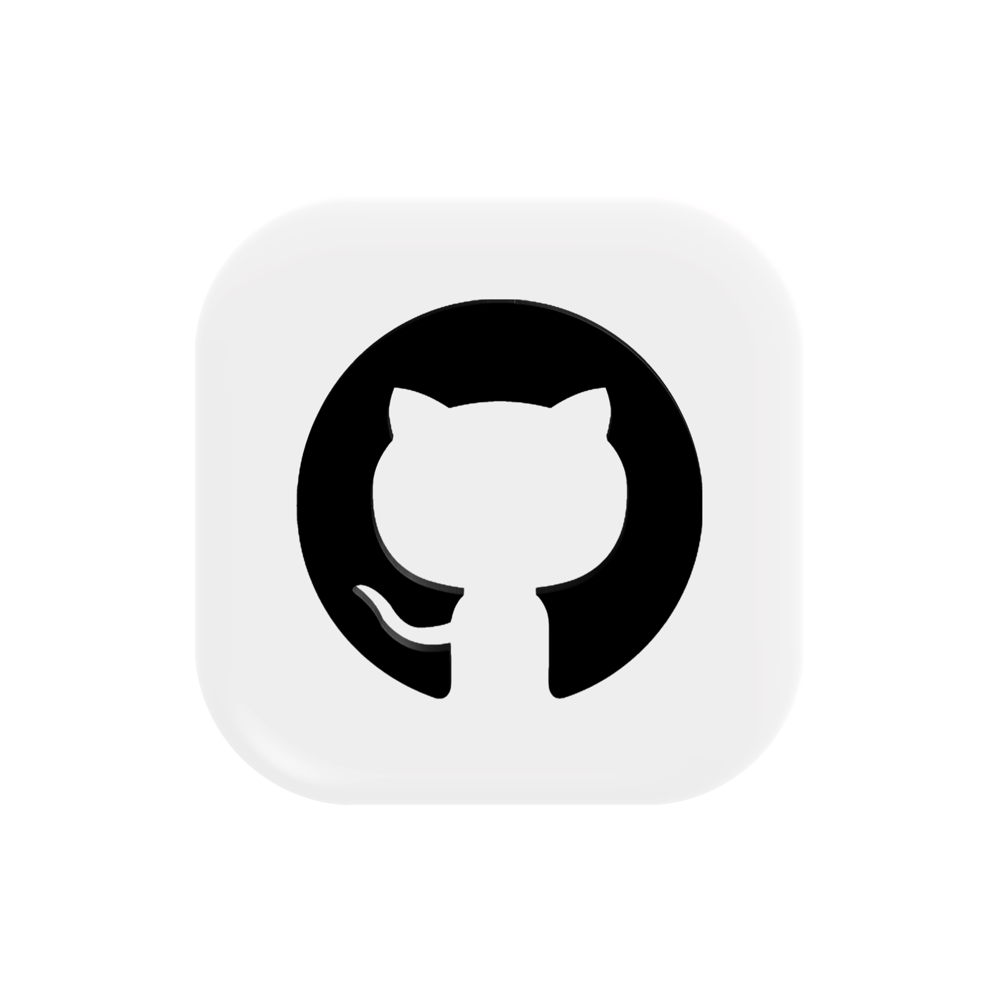
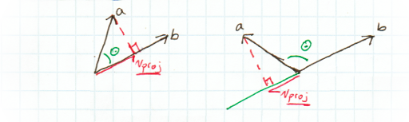
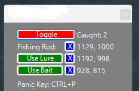
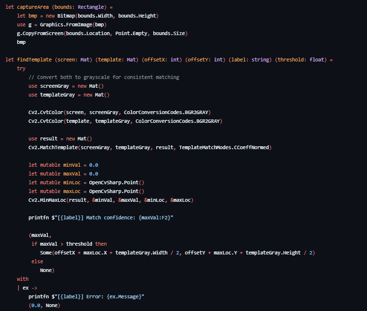
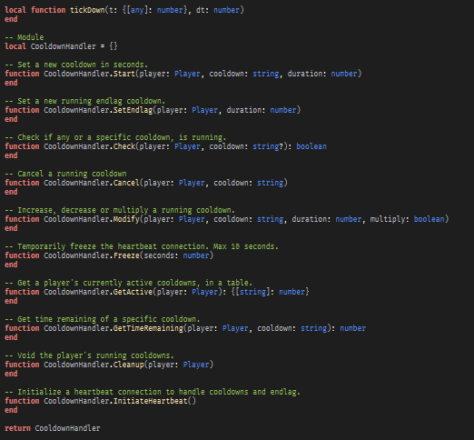
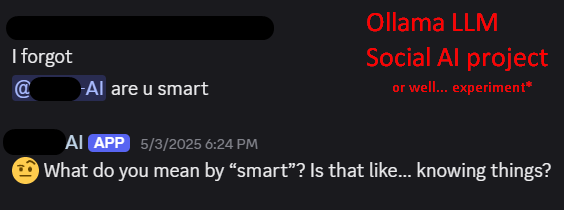
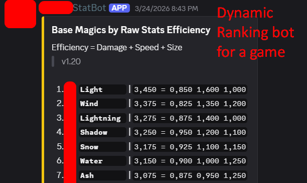

N.V
TEC Ballerup
Aug. 2025 — Jan. 2026
Data- og kommunikationsuddannelsen

n-valentin portfolioLua - Luaulocal function Accelerate(wish_direction:Vector3, current_velocity:Vector3, max_accel:number, max_velocity:number, dt:number): Vector3 if crouched then max_velocity = set.Movement.MAX_SPEED[1] * 0.5 max_accel = set.Movement.MAX_ACCEL[2] end --sv_accelerate local proj_vel:number = current_velocity:Dot(wish_direction) local accel_vel:number = max_accel * dt if (proj_vel + accel_vel > max_velocity) then accel_vel = max_velocity - proj_vel end return current_velocity + wish_direction * accel_vel end local connect_heartbeat: RBXScriptConnection connect_heartbeat = client.Heartbeat:Connect(function(dt) local vecForward,vecRight = hrp.CFrame.LookVector * (keyW - keyS), hrp.CFrame.RightVector * (keyD - keyA) wishDirection = vecForward + vecRight --Post calculation to fix normalization errors. if wishDirection.Magnitude > 0 then wishDirection = wishDirection.Unit else wishDirection = Vector3.new(0, 0, 0) end local currentVelocity = hrp.AssemblyLinearVelocity * Vector3.new(1,0,1) local move:Vector3 = Vector3.new(0,0,0) --friction local velmag = currentVelocity.Magnitude if velmag ~= 0 and grounded then--avoid dividing by 0. local drop = velmag * dt * 7 currentVelocity *= math.max(velmag - drop, 0) / velmag end move = Accelerate(wishDirection, currentVelocity, set.Movement.MAX_ACCEL[1], (grounded and set.Movement.MAX_SPEED[1] or set.Movement.MAX_SPEED[2]), dt) end)
Prism Syntax Highlighter
VideoJS Video Player

Source

Lua - Luau--The update() function is disclosed --However this is the initialization function function CameraController.Initialize() -- Safely reset RenderStopped connection -- If exists, disconnect it if clientRSC then clientRSC:Disconnect() end -- For debugging print("Initializing CameraController") -- Connect RenderStepped event to smoothly update camera clientRSC = client.RenderStepped:Connect(update) -- Internal field to associate camera with player position -- The anchor acts as pivot for player camera.CameraSubject = script.Anchor -- Refresh crosshair reference -- Dynamically associated with camera angles crosshairGui = player.PlayerGui:WaitForChild("CrosshairGui") end


